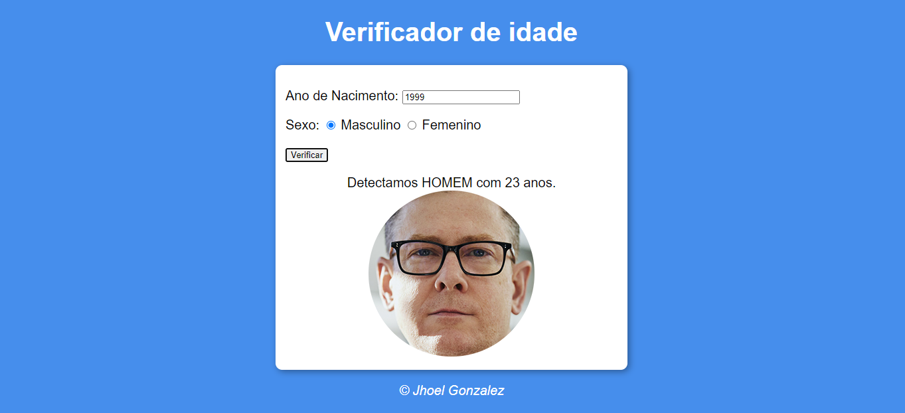

Verificador de Idade

Descrição
Projeto desenvolvido no curso de javascipt, pelo professor Gustavo Guanabara do canal Curso em Video.
Foram implementadas funções para inserir imagens no site de forma dinâmica, fazendo uso aritmética para realização dos cálculos para assim obter a idade.